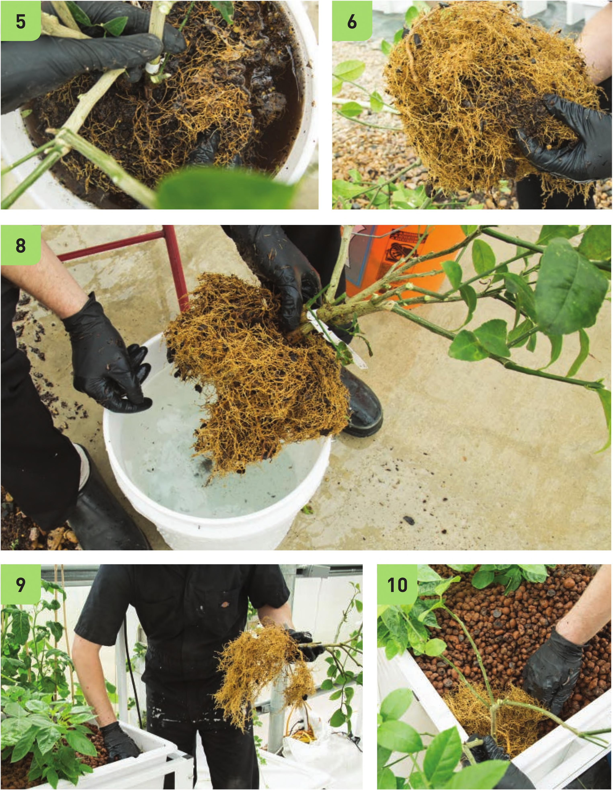

5 Gently shake the plant to wash off soil from the roots. 6 Use your fingers to loosen up the roots to expose soil clumps trapped deep within. 7 It may be necessary to dump and refill the bucket multiple times to get all the soil off the roots. A watering wand with a gentle flow can help speed the process. 8 Pick out as much soil and debris as possible without ripping up the roots. 9 Clear some space for the transplant. 10 Insert the transplant and cover the root system. 1 1 Water in the new transplant to improve root contact with the substrate. STARTING SEEDS AND CUTTINGS 149
